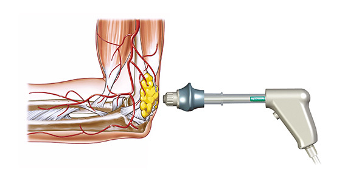

TERAPIA DE ONDAS DE CHOQUE
Terapia ideal para acelerar la recuperación y curar diversas indicaciones que causan dolor agudo o crónico.
MECANISMO DE ACCION
El tratamiento de ondas de choque está basado en una onda acústica que lleva mucha energía a los puntos dolorosos y tejidos musculoesqueléticos con condiciones subagudas, subcrónicas y crónicas. Las ondas acústicas con pico de alta energía usadas en la terapia de ondas de choque interactúan con los músculos, tendones y huesos causando efectos médicos generales de reparación acelerada de tejidos, crecimiento celular, analgesia y restauración de la movilidad.
APLICACIÓN EN LA EPICONDILITIS
El codo de tenista es una condición frecuente que ocurre hasta en el 10% de la población general. Por desgracia, el tratamiento conservador de la epicondilitis es largo (reposo), incluye medicamentos (analgésicos, inyecciones de esteroides) y, a menudo necesita repetición. La Terapia de Ondas de Choque; por otro lado, ofrece un alivio del dolor más rápido y cura con una eficiencia de más del 70% en tan sólo un máximo de 5 tratamientos.
EFICACIA
La mayoría de los pacientes con problemas de dolor crónico han sido sometidos a varios tipos de tratamientos fallidos. La evidencia ha mostrado que hasta 80% de estos pacientes, sometidos a tratamiento con Terapia de Ondas de Choque, han logrado eliminar su problema.